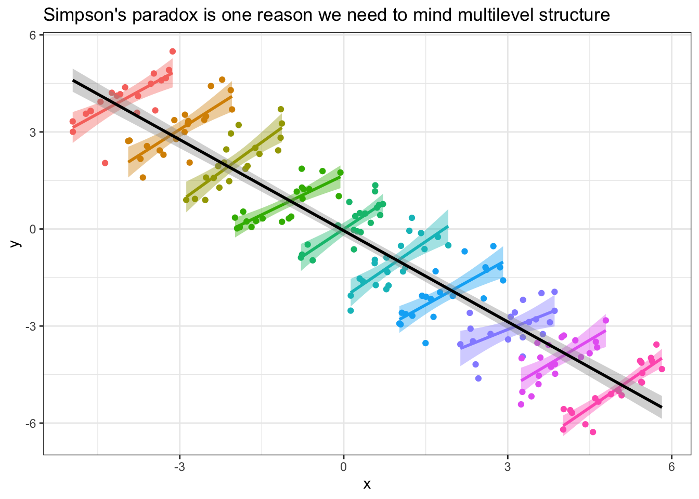
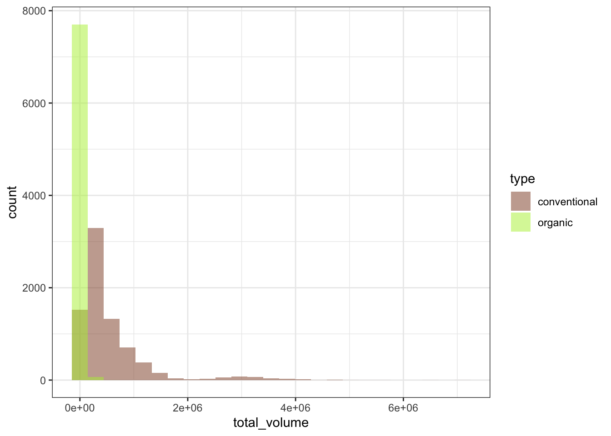
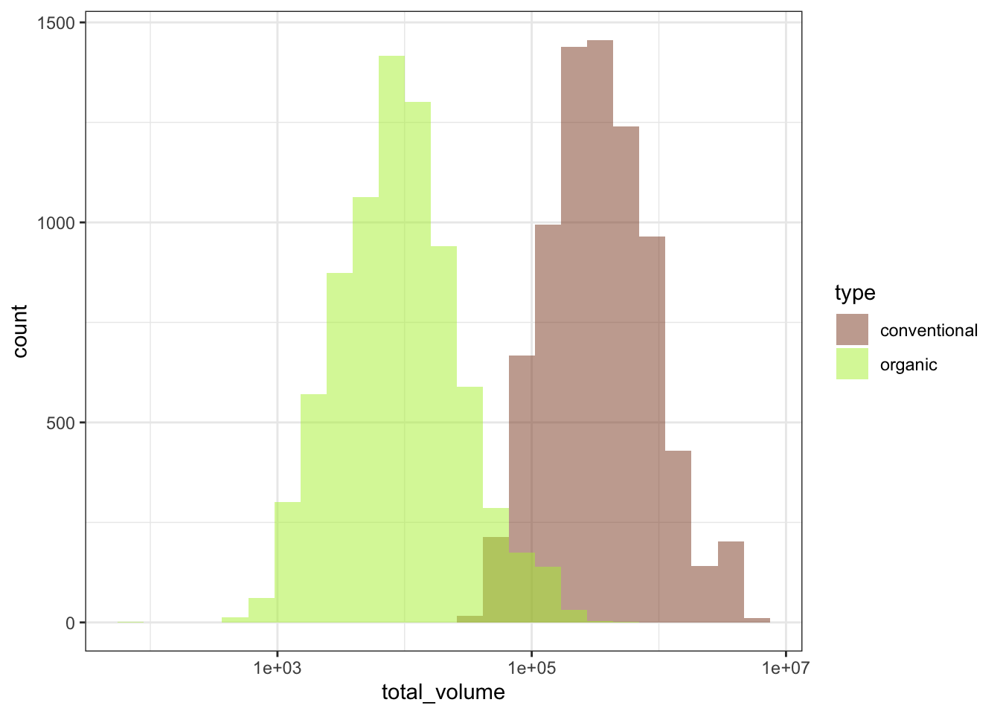
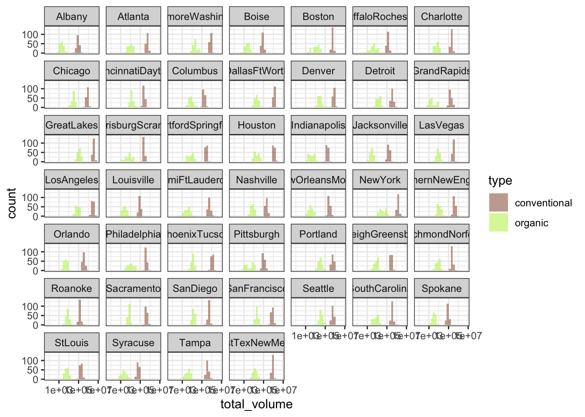
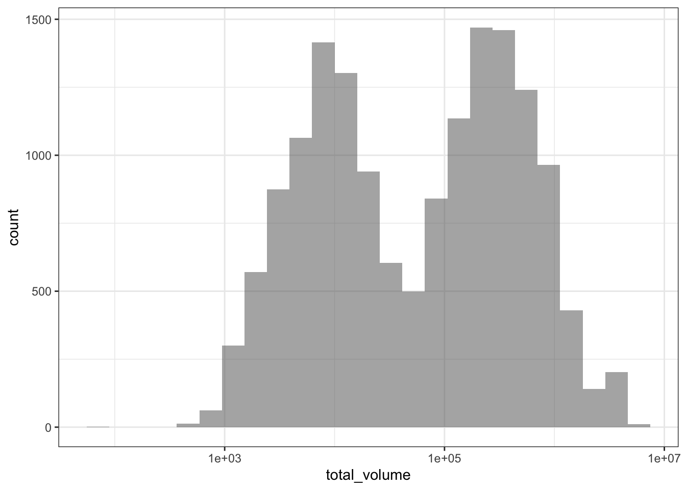
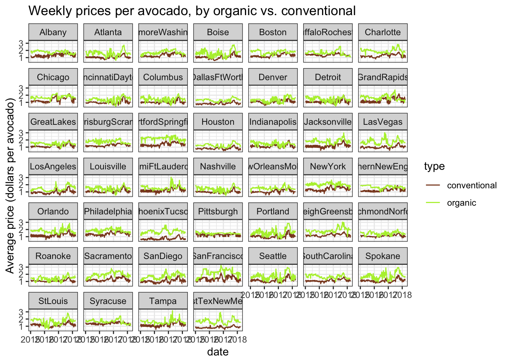
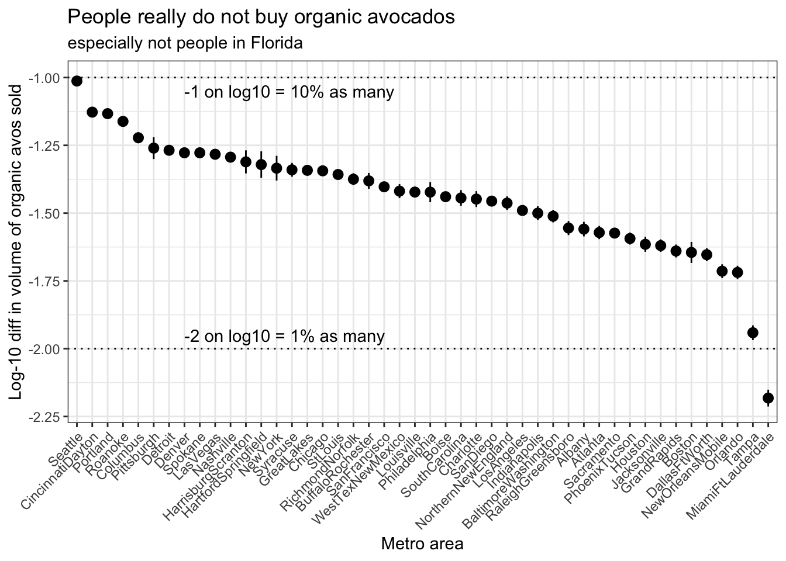
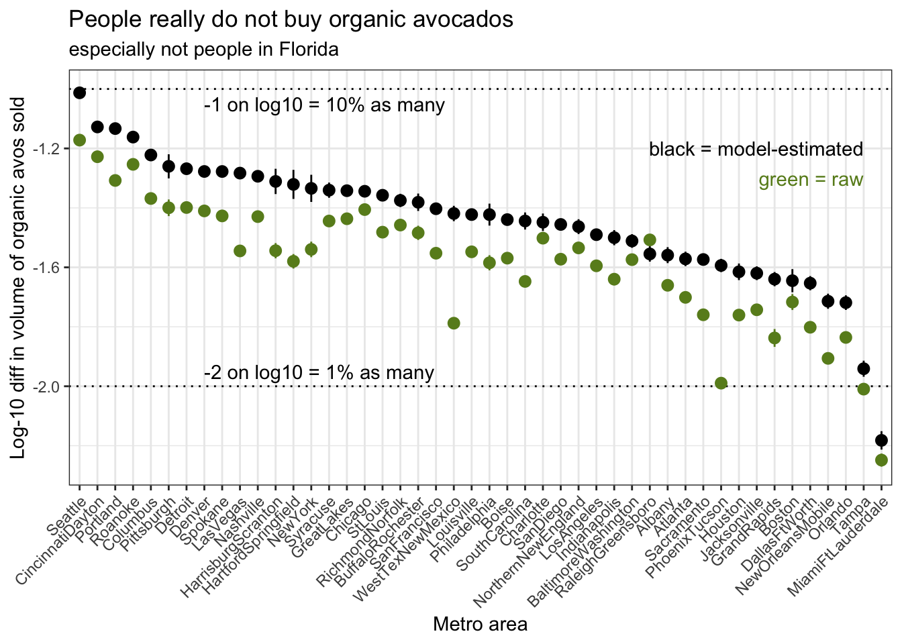
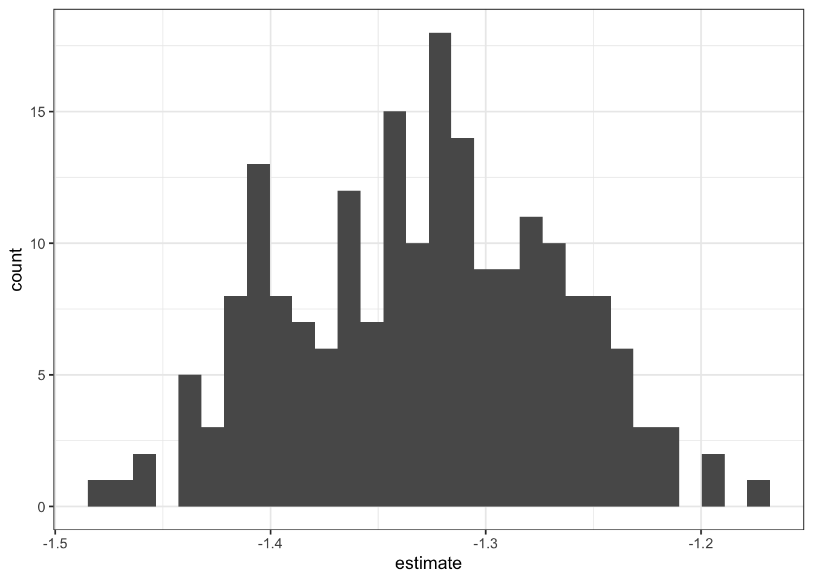
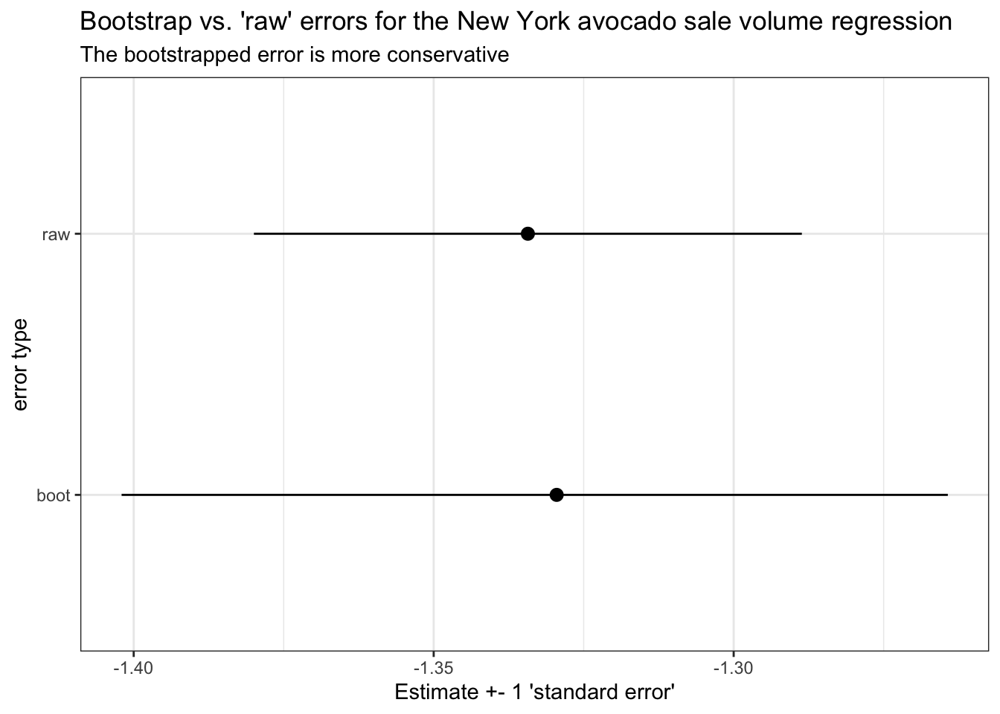

Wrangling multilevel data in the tidyverse
R
tidyverse
tutorial
This is the narrative lesson plan and tutorial for my 2-hour R workshop, Wrangling Multilevel Data in the R Tidyverse. Come on in!
This is the narrative lesson plan for my 2-hour R workshop, Wrangling Multilevel Data in the R Tidyverse.
The code examples have been updated with the following:
\(x)anonymous function shorthand now recommended insidemap(), according to purrr >= 1.0.0 and R >= 4.0 stylegeom_pointrange()is now used to plot points and error bars together, instead ofgeom_errorbar() + geom_point(). I likegeom_pointrange()better now for conciseness!
Learning goals
By the end of this lesson, learners will be able to:
- “fold” and “unfold” tibble list-columns with
tidyr::nest()/unnest() - use
purrr::map()to flexibly perform vectorized operations on nested data - more specifically, fit a single model to each subset of a multilevel dataset
- visualize subset-model summary statistics all together with
ggplot2
Learners will also review the following skills:
- reading in tabular data with
readr - using the pipe
%>%to construct human-readable chains of functions - inspecting data and diagnosing any necessary data cleaning
- calculating summary statistics on observation-level data with
group_by()andsummarize() - Fit a multiple regression using
lm()and interpret coefficient values - generalizing statistical techniques to data collected on different topics
This tutorial is not written as an exhaustive walkthrough of all of the use cases and capabilities of these functions/packages. Rather, it is written as a bite-size tour of an example data analysis from start to finish*.
For more exhaustive documentation, you can visit the online reference pages for your package of interest. For more in-depth self-teaching, please refer to the R for Data Science online textbook by Garrett Grolemund and Hadley Wickham.
*The analyses demonstrated here are by no means the final analyses you might do with these data! There is just only so much that can be covered within the scope of this tutorial.
Notes for instructors
This lesson is written to be usable as a standalone, follow-along-at-home tutorial. For those wishing to use this as a lesson plan for live instruction, please refer to the following.
- Do not copy and paste code from the lesson document into console/your live-coding document. Please feel free to follow the code line by line with the lesson. However, I consider it critical for you to live-code every piece of code you can; that is, type everything out by hand and narrate, piece by piece, out loud as you do so. This has two main benefits:
- Requires you, the instructor, to digest and explain each piece of code you type
- Paces your typing so that learners can keep up as they type along with you
- Do ad-lib on the plain-text lecture notes. What I have is not exhaustive. If you want to spend more or less time explaining something than I’ve allotted, it’s your call.
I have some useful asides written throughout the tutorial marked as instructor’s notes. If you’re following along with this tutorial at home, you may find these notes useful as supplementary information. Usually, these notes will occur in locations where I have deliberately omitted teaching a particular concept or technique. I’ve tried to summarize what I’m omitting from the primary lesson plan and why I’m doing so, with links for additional exploration for those at home who do want to jump further in.
And now, the feature presentation:
Lesson body
A brief intro to multilevel structure: It’s everywhere!
Chances are, you’ve dealt with multilevel data before.
In the more micro-scale experimental sciences, data take multilevel structure every time you take multiple measurements per research unit, repeated for multiple research units. In psychology research like mine, this means multiple measurements per participant, repeated for multiple participants. This holds true for any set of multiple measurements out of multiple lab setups (petri dishes, vacuum chambers, whatever you use). Observations can be grouped in all of these cases, by whichever participant/lab apparatus/otherwise that they were collected from.
In the macro-scale observational (and more often social) sciences, you might have multiple measurements per city, state, or country, repeated for multiple cities/states/countries. Again, this yields data that can be grouped by the locale from which they were collected.
And in any research, if you have a collaborative project across multiple labs where each lab is collecting the same data at their home location, the data now have multilevel structure because they can be grouped by the lab at which they were collected.
When you have multiple measurements per group, across many grouping units, you have multilevel data! It’s important when you do have multilevel data to characterize patterns in the data both within and between units. This is important to do for deep statistical reasons, but for today, these reasons can be summarized by the following:
In general, any two observations from the same units are more likely to have something in common with one another than any two observations from different units. We thus benefit from accounting for the fact that variance within a unit is not equivalent to variance between units.
Here’s an extreme example of cases where the within-unit and between-unit patterns are actively at odds with one another:
If you had data that took this structure, where the slope within units was positive, but the overall values between units are scattered in such a way that the slope across units was negative, failing to examine the unit-level relationships before jumping into the overall data analysis might lead you to draw erroneous conclusions!
More generally, a particular relationship that holds within the observations of a single unit might look different in another unit, and eyeballing the possible similarities/differences in these relationships is the first step to accounting for them statistically in the future. In this tutorial, we’ll be practicing using tidyverse techniques to do this eyeballing cleanly and efficiently.
The content of this tutorial is technically not statistical in nature, but the motivation behind it is inherently statistical, so that’s why I want to take the time to introduce the statistical reasoning, at least conceptually, before we jump into the R.
And importantly, the techniques we practice today are useful for any data analysis you want to repeat over many identically-structured sub-datasets. I’ll demonstrate another one of these applications, bootstrap resampling analysis, at the end of this tutorial.
Instructor’s note: A full exploration of the motivations behind multilevel data analysis is beyond the scope of this tutorial. Today, we will be focusing on data wrangling tools you can use to explore the multilevel-ness of your data, which can lend useful insights no matter how you ultimately decide to analyze your data.
Introducing the data
In this tutorial, we’ll be exploring grocery store sales data of millenials’ favorite fruit: avocados!

These data originally come from the Hass Avocado board, via Justin Kiggins on Kaggle. (I downloaded the local copy of these data on 2020-03-25.)
The data come from many weekly measures of avocado sales over a few years, collected in many metropolitan areas of the United States. Intuitively, we might expect that avocado sale data might differ based on which region the avocados were sold in. For example, all regions of the US might show similar patterns of avocado sales, but at different levels depending on the average cost of living in that region. Avocados probably sell for cheaper in Dallas, TX, where I grew up, than in New York City, where I live currently, and I’d like to group avocado sales by region so that region-specific avocado prices don’t influence the patterns I see in the data.
A brief note:
Unless you specifically do research on grocery store avocado prices, it’s unlikely that these data map directly onto the data you deal with in your own research, and that’s okay. It’s important to practice abstracting data cleaning/manipulation and statistical techniques away from the specific data you’re practicing them on, so that you can learn from techniques demonstrated in other disciplines, figure out how they might help you with your own data, and then apply those techniques. Psychologists can learn from economists can learn from biologists, and vice versa. :)
Reading in the data
This blog post’s local copy of the avocado sales CSV can be found in the static website files here. You should be able to download the CSV from that link by right-clicking and downloading a copy to your computer, or if your computer is actively connected to the internet, you can use the URL as the path to data in a readr::read_csv() call.
In this post, I can use a relative path because the .Rmd this web page is generated from is saved in the same folder as the avocado data. You will need to use the appropriate URL or path to a local copy of the data when you read_csv() on your own machine, so be aware that copying and pasting the code out of this chunk will probably not work out of the box.
avocado_raw <- read_csv("avocado.csv") %>%
# When I want to rename columns, I try to leave the raw data UNTOUCHED
# to improve reproducibility in case someone else were to download the data
# directly from the source I did
# as such, all renaming is done on the tibble after I've read it into R
rename(row_num = "...1",
date = "Date",
avg_price = "AveragePrice",
total_volume = "Total Volume",
PLU4046_sold = "4046",
PLU4225_sold = "4225",
PLU4770_sold = "4770",
total_bags = "Total Bags",
small_bags = "Small Bags",
large_bags = "Large Bags",
xlarge_bags = "XLarge Bags") %>%
# There's a row numbers column written out in the raw csv.
# I don't think we need this so I'll select that column out
select(-row_num) %>%
# For efficiency, I'll store the year as integer
mutate(year = lubridate::year(date) %>% as.integer())Let’s take a peek at the first few rows of the data.
avocado_raw# A tibble: 18,249 × 13
date avg_price total_volume PLU4046_sold PLU4225_sold PLU4770_sold
<date> <dbl> <dbl> <dbl> <dbl> <dbl>
1 2015-12-27 1.33 64237. 1037. 54455. 48.2
2 2015-12-20 1.35 54877. 674. 44639. 58.3
3 2015-12-13 0.93 118220. 795. 109150. 130.
4 2015-12-06 1.08 78992. 1132 71976. 72.6
5 2015-11-29 1.28 51040. 941. 43838. 75.8
6 2015-11-22 1.26 55980. 1184. 48068. 43.6
7 2015-11-15 0.99 83454. 1369. 73673. 93.3
8 2015-11-08 0.98 109428. 704. 101815. 80
9 2015-11-01 1.02 99811. 1022. 87316. 85.3
10 2015-10-25 1.07 74339. 842. 64757. 113
# ℹ 18,239 more rows
# ℹ 7 more variables: total_bags <dbl>, small_bags <dbl>, large_bags <dbl>,
# xlarge_bags <dbl>, type <chr>, year <int>, region <chr>We can get a partial codebook of what data these columns contain from Justin Kiggins, the uploader of the original Kaggle dataset:
Some relevant columns in the dataset:
date- The date of the observationavg_price- the average price of a single avocadotype- conventional or organicyear- the yearregion- the city or region of the observationtotal_volume- Total number of avocados soldPLUXXXX_sold- Total number of avocados with PLU XXXX sold
Finally, we can assume that the *_bags columns measure the total number of variously sized bags of avocados in a given week.
Going forward, we’ll treat region as the unit grouping variable. What all regions are there?
unique(avocado_raw$region) [1] "Albany" "Atlanta" "BaltimoreWashington"
[4] "Boise" "Boston" "BuffaloRochester"
[7] "California" "Charlotte" "Chicago"
[10] "CincinnatiDayton" "Columbus" "DallasFtWorth"
[13] "Denver" "Detroit" "GrandRapids"
[16] "GreatLakes" "HarrisburgScranton" "HartfordSpringfield"
[19] "Houston" "Indianapolis" "Jacksonville"
[22] "LasVegas" "LosAngeles" "Louisville"
[25] "MiamiFtLauderdale" "Midsouth" "Nashville"
[28] "NewOrleansMobile" "NewYork" "Northeast"
[31] "NorthernNewEngland" "Orlando" "Philadelphia"
[34] "PhoenixTucson" "Pittsburgh" "Plains"
[37] "Portland" "RaleighGreensboro" "RichmondNorfolk"
[40] "Roanoke" "Sacramento" "SanDiego"
[43] "SanFrancisco" "Seattle" "SouthCarolina"
[46] "SouthCentral" "Southeast" "Spokane"
[49] "StLouis" "Syracuse" "Tampa"
[52] "TotalUS" "West" "WestTexNewMexico" Most of these regions appear to correspond to specific metropolitan areas. However, I do see some regions in this data that look like supersets of other regions. "TotalUS" ought to be a superset of all of the individual metropolitan regions, and, for example, "California" should encompass c("LosAngeles", "Sacramento", "SanDiego", "SanFrancisco"). I’m going to go ahead and filter() out all the data that are for multi-metropolitan regions so we can do our best to avoid double-counting.
I’m also going to select() out the *_bags columns and the PLU*_sold columns, as I don’t plan to be doing any stats on the numbers of variously sized avocado bags sold per week, or avocado sales by avocado size (the different PLU values correspond to small, large, and extra large avocados). I think we can get most of the useful information in this data from the remaining columns.
# Note that I'm not removing GreatLakes, NorthernNewEngland, or WestTexNewMexico
# because I think those are counting large regions that don't have a big city
# so they're not double-counting the other cities
avocado <- avocado_raw %>%
filter(!(region %in% c("California",
"Midsouth",
"Northeast",
"Plains",
"SouthCentral",
"Southeast",
"TotalUS",
"West"))) %>%
select(-ends_with("bags"), -starts_with("PLU"))A latent benefit of removing unwanted columns in the data is that when we print the tibble to console to inspect the first several rows, we can see more columns that were originally pushed off to the side.
avocado# A tibble: 15,545 × 6
date avg_price total_volume type year region
<date> <dbl> <dbl> <chr> <int> <chr>
1 2015-12-27 1.33 64237. conventional 2015 Albany
2 2015-12-20 1.35 54877. conventional 2015 Albany
3 2015-12-13 0.93 118220. conventional 2015 Albany
4 2015-12-06 1.08 78992. conventional 2015 Albany
5 2015-11-29 1.28 51040. conventional 2015 Albany
6 2015-11-22 1.26 55980. conventional 2015 Albany
7 2015-11-15 0.99 83454. conventional 2015 Albany
8 2015-11-08 0.98 109428. conventional 2015 Albany
9 2015-11-01 1.02 99811. conventional 2015 Albany
10 2015-10-25 1.07 74339. conventional 2015 Albany
# ℹ 15,535 more rowsInstructor’s note: If you wish, you can set tibble printing options to print preview values for all columns of a tibble, irrespective of whether those additional columns spill over to the next row of print output. You can do it temporarily by explicitly calling
print(my_tibble, width = Inf)to override the default console-width-detecting behavior, or by setting your R instance’s global options withoptions(tibble.width = Inf)to print all columns for all tibbles. However, I personally like the width-restricting behavior of default tibble printing. I’ll take the clean console output.
Inspecting the data
Today’s explorations will focus around the following diffuse research question: Do avocado buyers prefer buying conventional or organic avocados? By how much? How do these patterns differ from region to region? For a variety of reasons (pick your favorite), it might be interesting to try to quantify grocery shoppers’ relative preference for conventional vs. organic avocados, as it probably tracks with regional variations in supply chain access, and/or psychological attitudes about health and environmentalism.
(We won’t be able to get into those more complex variables because they aren’t present in the avocado data we have, but just an inspiration!)
Even before we get into looking for more complex statistics within each region, we can use simpler tidyverse tools to generate and inspect single-value summary statistics, both visually and numerically, for each metropolitan area present in the data.
Quick graphs
We can use built-in grouping features of ggplot2 to inspect the data visually without having to pre-manipulate it much.
First, let’s look at a histogram of weekly avocado sales, across all weeks, and all metropolitan areas. How many avocados are people buying in a given week? I’m also going to split this histogram to get two different filled histograms for conventional and organic avocado sales so we can see those sales separately. I’ll set the colors to… ah, avocado-themed.
avo_colors = c("sienna4", "olivedrab2")
plot_hist_avo_total_volume <- avocado %>%
ggplot(aes(x = total_volume, fill = type)) +
geom_histogram(position = "identity", bins = 25, alpha = 0.5) +
scale_fill_manual(values = avo_colors) +
theme_bw()
plot_hist_avo_total_volume
Ooh, yikes, the weekly total avocados sold looks super gamma-skewed. Most weeks it’s maybe a few tens of thousands of avocados sold, but in some weeks and some regions it gets into the millions of avocados sold (that’s a lot of avocados in a week!), so we would probably do well to log-transform the data to try to get it to take a more normal-ish distribution.
Right now, we can use one of ggplot2’s scale helper functions to set the scale to be on log-10 units.
plot_hist_avo_total_volume +
scale_x_log10()
That looks much better! Now we can proceed.
Next, let’s break up the graph by region, so we can see the sub-histograms of total avocados sold for each metropolitan area. A super-fast way to break up your graph by each grouping unit is to facet your ggplot, or to break it up into small multiples. I like to use facet_wrap(~ grouping_unit) to break a single plot up, so that the data for each metro area is displayed on its own sub-plot, or facet. The “wrap” part of facet_wrap() tries to arrange the facets in “reading” order, from left-to-right and then top-to-bottom to fill the plot area as efficiently as possible.
plot_hist_avo_total_volume +
# let's not forget to log-scale the x-axis!
scale_x_log10() +
facet_wrap(~ region)
Incidentally, graphing data at first can be a great way of identifying important variables in the data that need to be considered. For example, what if I had forgotten to break up the sales data by conventional vs. organic avocado type?
avocado %>%
# Notice that I've removed the fill aesthetic
# so now it's not splitting by avo type
ggplot(aes(x = total_volume)) +
geom_histogram(position = "identity", bins = 25, alpha = 0.5) +
scale_x_log10() +
theme_bw()
I might see a bimodal histogram and say “huh, that’s funny.” If I weren’t so careful, I might continue my business without accounting for this bimodality. But optimally I’d stop and think “what additional variable might be driving this bimodality?” and after some exploration, realize that I need to consider conventional vs. organic avocado type when looking at avocado sales in order to properly characterize the data. Always keep an eye out!
Basic summary statistics
In addition to graphs, we can generate simple one-shot summary statistics using group_by() and summarize() from the dplyr package.
As a companion to the exploratory graphs of total_volume we just generated, we can calculate numerical summaries of the weekly number of avocados sold as a quick metric of the difference in buying patterns for conventional and organic avocados. Before we calculate these summaries, though, we should create a new column for log-10-transformed total_volume, as we saw earlier in our graphs that it’s massively right-tailed and needs to be log-transformed to look more normal.
# The double-sided assignment pipe %<>%, from magrittr
# you can use this by library()-ing magrittr
# in addition to library(tidyverse)
# avocado %<>% ... does the same thing as:
# avocado <- avocado %>% ...
# so it gives us a shortcut to pipe an object into some calls,
# and then re-save the new result back into the old variable name
# let's save total_volume_log10 into avocado because we'll need it
# many times in the future
avocado %<>%
mutate(total_volume_log10 = log10(total_volume))avocado %>%
group_by(region, type) %>%
summarize(mean_total_volume = mean(total_volume_log10),
sd_total_volume = sd(total_volume_log10))`summarise()` has grouped output by 'region'. You can override using the
`.groups` argument.# A tibble: 92 × 4
# Groups: region [46]
region type mean_total_volume sd_total_volume
<chr> <chr> <dbl> <dbl>
1 Albany conventional 4.95 0.140
2 Albany organic 3.29 0.205
3 Atlanta conventional 5.70 0.0899
4 Atlanta organic 4.00 0.236
5 BaltimoreWashington conventional 5.88 0.0722
6 BaltimoreWashington organic 4.31 0.225
7 Boise conventional 4.91 0.0987
8 Boise organic 3.34 0.209
9 Boston conventional 5.74 0.0811
10 Boston organic 4.03 0.359
# ℹ 82 more rowsAbove, we group_by() both region and type to get two separate means and SDs of weekly avocados sold in each region, one value each for conventional and organic avocados.
We can pivot_wider() our observation-level data, to get total_volume into two columns, one for the conventional avocados and one for the organic avocados, for each week. Thus, instead of two rows per week per metro region, one for each avocado type, we’ll have one row per week per metro region, with the relevant values for each avocado type in their own columns.
avocado %>%
# Here, selecting the id_cols and the ONE values_from column I want to pivot out
select(year, date, region, type, total_volume_log10) %>%
pivot_wider(names_from = type,
values_from = total_volume_log10,
names_prefix = "total_volume_")# A tibble: 7,774 × 5
year date region total_volume_conventional total_volume_organic
<int> <date> <chr> <dbl> <dbl>
1 2015 2015-12-27 Albany 4.81 3.00
2 2015 2015-12-20 Albany 4.74 3.07
3 2015 2015-12-13 Albany 5.07 3.00
4 2015 2015-12-06 Albany 4.90 3.06
5 2015 2015-11-29 Albany 4.71 2.92
6 2015 2015-11-22 Albany 4.75 2.93
7 2015 2015-11-15 Albany 4.92 3.08
8 2015 2015-11-08 Albany 5.04 3.12
9 2015 2015-11-01 Albany 5.00 3.01
10 2015 2015-10-25 Albany 4.87 3.07
# ℹ 7,764 more rowsInstructor’s note: Above, I’ve
select()-ed to remove all the other outcome columns other thantotal_volumebefore pivoting my dataframe. If you wanted to pivot all outcome columns in the data bytype, you could, as oftidyr >=1.0.0. The least verbose way to do this would be to feed a negative column name vector into thevalues_fromargument to exclude ID columns from the set of columns to pivot, like so:
avocado %>%
pivot_wider(names_from = type, values_from = -c(year, date, region))# A tibble: 7,774 × 11
date year region avg_price_conventional avg_price_organic
<date> <int> <chr> <dbl> <dbl>
1 2015-12-27 2015 Albany 1.33 1.83
2 2015-12-20 2015 Albany 1.35 1.89
3 2015-12-13 2015 Albany 0.93 1.85
4 2015-12-06 2015 Albany 1.08 1.84
5 2015-11-29 2015 Albany 1.28 1.94
6 2015-11-22 2015 Albany 1.26 1.94
7 2015-11-15 2015 Albany 0.99 1.89
8 2015-11-08 2015 Albany 0.98 1.88
9 2015-11-01 2015 Albany 1.02 1.88
10 2015-10-25 2015 Albany 1.07 1.83
# ℹ 7,764 more rows
# ℹ 6 more variables: total_volume_conventional <dbl>,
# total_volume_organic <dbl>, type_conventional <chr>, type_organic <chr>,
# total_volume_log10_conventional <dbl>, total_volume_log10_organic <dbl>Then, by default, since there are multiple
values_fromcolumns, each of them has the relevant level ofnames_from(here, avocadotype) appended to the end of the column name with thenames_sepseparator.
Once the data is pivoted, we can now use mutate() to subtract the organic total dollars spent from the conventional total dollars spent. Then, we can generate similar mean/SD summaries as we did before. Finally, we can make the little tibble print preview a bit more informative by using arrange() to sort the data such that the metro areas with highest conventional - organic sales volume differences get sorted to the top of the tibble.
avocado %>%
select(year, date, region, type, total_volume_log10) %>%
pivot_wider(names_from = type,
values_from = total_volume_log10,
names_prefix = "total_volume_") %>%
mutate(total_volume_diff = total_volume_conventional - total_volume_organic) %>%
group_by(region) %>%
summarize(mean_volume_diff = mean(total_volume_diff),
sd_volume_diff = sd(total_volume_diff)) %>%
arrange(desc(mean_volume_diff))# A tibble: 46 × 3
region mean_volume_diff sd_volume_diff
<chr> <dbl> <dbl>
1 MiamiFtLauderdale 2.25 0.285
2 Tampa 2.01 0.228
3 PhoenixTucson 1.99 0.134
4 NewOrleansMobile 1.91 0.247
5 GrandRapids 1.84 0.390
6 Orlando 1.84 0.170
7 DallasFtWorth 1.80 0.177
8 Houston 1.76 0.235
9 Sacramento 1.76 0.149
10 Jacksonville 1.74 0.171
# ℹ 36 more rowsHuh, cities in Florida appear to be over-represented in the top several metro areas in buying more conventional than organic avocados. I wonder what’s going on there? We can’t rule out that this is driven by Florida having waaaay cheaper conventional avocados, and relatively more expensive organic avocados, which could be driving Floridian shoppers to choose conventional. We probably want to take this into account in later analyses, so that any effects of conventional vs. organic we see on the volume of avocados sold aren’t driven by a huge price premium for organic avocados. (Stay tuned!)
We can get a fair amount of mileage out of these initial visualizations and summaries, and there’s nothing wrong with using these summaries as a first pass. I do so all the time! However, when you want (or need) to be able to calculate more complex statistics on the weekly data for each metro area, you’ll need more complex tools.
Nesting the data
Nearly all of the tidyverse features we’ll be working through in the rest of this tutorial rely on two key features of R to make their magic happen: list-columns and flexible vectorizing functions.
Intro to nest(), unnest(), and tibble list-columns
A df is composed of columns, each of which is a vector of identical length. But nobody ever said the columns of a df all have to be atomic vectors! A df column can be a list vector, where each element of said list-column can contain objects of different data types and lengths. While each element of list-column can contain objects of various and sundry types/lengths, list-columns gain a lot of power when they contain objects of consistent type. (When this is true, you can apply a single function to every row of a list-column, and get a single column of consistent output–this is where we’re headed.)
In this way, a list-column allows you to store multiple observations per unit wrapped up in such a way that the main df still has one row per unit, but you retain the observation-level data because you haven’t actually collapsed across any variables.
First, we’ll create a new variable by folding our observation-level data into a new shape, using nest() from the tidyr package. This is going to package the long-form avocado data into nested form, which is somewhere between long data (one row per observation) and wide data (one row per grouping unit).
avo_by_region <- avocado %>%
nest(sales = -region)A nested dataframe like the one we just created has two main column types: key columns and list-columns of sub-dataframes.
Key columns are the columns you might group_by() before, say, generating summary statistics with summarize(). They act as a label for the data contained in that row’s list-columns. List-columns do not contain a single atomic element in each row, but instead _a whole sub-data frame containing all the observation-level data corresponding to that key level.
Instructor’s note: A deeper exploration of the uses for and behaviors of list-columns is beyond the scope of the current tutorial. This tutorial assumes learners have never intentionally worked with non-dataframe list objects, and demonstrates only the case of list-columns containing data nested from an original “normal” dataframe. R for Data Science’s section on dataframe list-columns is a useful reference for more information on list-columns.
Now, for list-columns, instead of actually printing the content of the vector, tibble output gives us a blurb about the object contained inside of each list element.
avo_by_region# A tibble: 46 × 2
region sales
<chr> <list>
1 Albany <tibble [338 × 6]>
2 Atlanta <tibble [338 × 6]>
3 BaltimoreWashington <tibble [338 × 6]>
4 Boise <tibble [338 × 6]>
5 Boston <tibble [338 × 6]>
6 BuffaloRochester <tibble [338 × 6]>
7 Charlotte <tibble [338 × 6]>
8 Chicago <tibble [338 × 6]>
9 CincinnatiDayton <tibble [338 × 6]>
10 Columbus <tibble [338 × 6]>
# ℹ 36 more rowsWe can see here that each row of sales, the list-column generated by nesting the data, contains a sub-tibble with 338 rows of the other 6 columns of data corresponding to each level of region. The data is still there, safe and sound!
nest() creates list-columns with the general argument format list_col = cols_to_put_into_list_col. Importantly, the columns you wish to put into the list-column can be specified using select() syntax. We can harness this to use the - to exclude specific key columns, and put all other non-key columns into the list-column. For example, if you wanted to hold out multiple key columns, for example, both region and type to split up the sub-data by conventional and organic:
avocado %>%
nest(sales = -c(region, type))# A tibble: 92 × 3
type region sales
<chr> <chr> <list>
1 conventional Albany <tibble [169 × 5]>
2 conventional Atlanta <tibble [169 × 5]>
3 conventional BaltimoreWashington <tibble [169 × 5]>
4 conventional Boise <tibble [169 × 5]>
5 conventional Boston <tibble [169 × 5]>
6 conventional BuffaloRochester <tibble [169 × 5]>
7 conventional Charlotte <tibble [169 × 5]>
8 conventional Chicago <tibble [169 × 5]>
9 conventional CincinnatiDayton <tibble [169 × 5]>
10 conventional Columbus <tibble [169 × 5]>
# ℹ 82 more rowsIn this way, you can flexibly choose which columns of data to fold into your list-column, and which key-columns you want to fold by.
When you want to unnest the data and go back to original long form, you might not be surprised to hear that the function we’ll need is unnest().
avo_by_region %>%
unnest(sales)# A tibble: 15,545 × 7
region date avg_price total_volume type year total_volume_log10
<chr> <date> <dbl> <dbl> <chr> <int> <dbl>
1 Albany 2015-12-27 1.33 64237. convention… 2015 4.81
2 Albany 2015-12-20 1.35 54877. convention… 2015 4.74
3 Albany 2015-12-13 0.93 118220. convention… 2015 5.07
4 Albany 2015-12-06 1.08 78992. convention… 2015 4.90
5 Albany 2015-11-29 1.28 51040. convention… 2015 4.71
6 Albany 2015-11-22 1.26 55980. convention… 2015 4.75
7 Albany 2015-11-15 0.99 83454. convention… 2015 4.92
8 Albany 2015-11-08 0.98 109428. convention… 2015 5.04
9 Albany 2015-11-01 1.02 99811. convention… 2015 5.00
10 Albany 2015-10-25 1.07 74339. convention… 2015 4.87
# ℹ 15,535 more rowsunnest() takes as its argument the list-column you wish to unnest, and then thy will be done, it takes the data back into long form for you. Notice that the key column, in this case region, is now once again repeated for every row in the data belonging to that key level.
To inspect the contents of a single element of a list-column, we have to index into the list-column. The tidyverse function to index single columns, equivalent to dollar-sign $ indexing dataframe columns in base R, is pull(). pull() is pipe-safe, meaning it takes a tibble/dataframe as its first argument, so we can pipe said dataframe into the function. Then, the second argument that we specify inside of the parentheses is the column name we want to index, “naked”, without quotation marks, as with other tidyverse functions.
avo_by_region %>%
pull(region) [1] "Albany" "Atlanta" "BaltimoreWashington"
[4] "Boise" "Boston" "BuffaloRochester"
[7] "Charlotte" "Chicago" "CincinnatiDayton"
[10] "Columbus" "DallasFtWorth" "Denver"
[13] "Detroit" "GrandRapids" "GreatLakes"
[16] "HarrisburgScranton" "HartfordSpringfield" "Houston"
[19] "Indianapolis" "Jacksonville" "LasVegas"
[22] "LosAngeles" "Louisville" "MiamiFtLauderdale"
[25] "Nashville" "NewOrleansMobile" "NewYork"
[28] "NorthernNewEngland" "Orlando" "Philadelphia"
[31] "PhoenixTucson" "Pittsburgh" "Portland"
[34] "RaleighGreensboro" "RichmondNorfolk" "Roanoke"
[37] "Sacramento" "SanDiego" "SanFrancisco"
[40] "Seattle" "SouthCarolina" "Spokane"
[43] "StLouis" "Syracuse" "Tampa"
[46] "WestTexNewMexico" We can see below that base R $ indexing yields the same result:
avo_by_region$region [1] "Albany" "Atlanta" "BaltimoreWashington"
[4] "Boise" "Boston" "BuffaloRochester"
[7] "Charlotte" "Chicago" "CincinnatiDayton"
[10] "Columbus" "DallasFtWorth" "Denver"
[13] "Detroit" "GrandRapids" "GreatLakes"
[16] "HarrisburgScranton" "HartfordSpringfield" "Houston"
[19] "Indianapolis" "Jacksonville" "LasVegas"
[22] "LosAngeles" "Louisville" "MiamiFtLauderdale"
[25] "Nashville" "NewOrleansMobile" "NewYork"
[28] "NorthernNewEngland" "Orlando" "Philadelphia"
[31] "PhoenixTucson" "Pittsburgh" "Portland"
[34] "RaleighGreensboro" "RichmondNorfolk" "Roanoke"
[37] "Sacramento" "SanDiego" "SanFrancisco"
[40] "Seattle" "SouthCarolina" "Spokane"
[43] "StLouis" "Syracuse" "Tampa"
[46] "WestTexNewMexico" There are definitely still instances where $ indexing columns is the cleanest way to index. However, in this tutorial we’ll be using pipe-safe tidyverse indexing functions moving forward so that we can stick with the %>% pipe for consistency.
Once we’ve used pull() to index a single column, we can use another tidyverse pipe-safe helper function, pluck(), this time for indexing elements of a vector. As a rule of thumb, pull() does what $ indexing does, and pluck() does what [] indexing does. Thus, the below code indexes the sales column, and then specifically the first element in that column vector.
avo_by_region %>%
pull(sales) %>%
pluck(1)# A tibble: 338 × 6
date avg_price total_volume type year total_volume_log10
<date> <dbl> <dbl> <chr> <int> <dbl>
1 2015-12-27 1.33 64237. conventional 2015 4.81
2 2015-12-20 1.35 54877. conventional 2015 4.74
3 2015-12-13 0.93 118220. conventional 2015 5.07
4 2015-12-06 1.08 78992. conventional 2015 4.90
5 2015-11-29 1.28 51040. conventional 2015 4.71
6 2015-11-22 1.26 55980. conventional 2015 4.75
7 2015-11-15 0.99 83454. conventional 2015 4.92
8 2015-11-08 0.98 109428. conventional 2015 5.04
9 2015-11-01 1.02 99811. conventional 2015 5.00
10 2015-10-25 1.07 74339. conventional 2015 4.87
# ℹ 328 more rowsWe can also use the dplyr tools we already know to subset avo_by_region() to pluck() the data belonging to a particular region.
avo_by_region %>%
# This should give us a one-row dataframe
# so we know the first element is the one we want
filter(region == "NewYork") %>%
pull(sales) %>%
pluck(1)# A tibble: 338 × 6
date avg_price total_volume type year total_volume_log10
<date> <dbl> <dbl> <chr> <int> <dbl>
1 2015-12-27 1.17 1129876. conventional 2015 6.05
2 2015-12-20 1.23 1139348. conventional 2015 6.06
3 2015-12-13 1.12 1254805. conventional 2015 6.10
4 2015-12-06 1.2 1068972. conventional 2015 6.03
5 2015-11-29 1.16 999170. conventional 2015 6.00
6 2015-11-22 1.14 1111803. conventional 2015 6.05
7 2015-11-15 1.04 1357393. conventional 2015 6.13
8 2015-11-08 1.13 1406262. conventional 2015 6.15
9 2015-11-01 1.06 2180520. conventional 2015 6.34
10 2015-10-25 1.23 1048046. conventional 2015 6.02
# ℹ 328 more rowsNotice that once you’ve got only one row in a nested dataframe, pluck()-ing to unlist the data in the list-column is equivalent to using unnest() to unfold all rows of the list-column.
avo_by_region %>%
filter(region == "NewYork") %>%
unnest(sales)# A tibble: 338 × 7
region date avg_price total_volume type year total_volume_log10
<chr> <date> <dbl> <dbl> <chr> <int> <dbl>
1 NewYork 2015-12-27 1.17 1129876. conventio… 2015 6.05
2 NewYork 2015-12-20 1.23 1139348. conventio… 2015 6.06
3 NewYork 2015-12-13 1.12 1254805. conventio… 2015 6.10
4 NewYork 2015-12-06 1.2 1068972. conventio… 2015 6.03
5 NewYork 2015-11-29 1.16 999170. conventio… 2015 6.00
6 NewYork 2015-11-22 1.14 1111803. conventio… 2015 6.05
7 NewYork 2015-11-15 1.04 1357393. conventio… 2015 6.13
8 NewYork 2015-11-08 1.13 1406262. conventio… 2015 6.15
9 NewYork 2015-11-01 1.06 2180520. conventio… 2015 6.34
10 NewYork 2015-10-25 1.23 1048046. conventio… 2015 6.02
# ℹ 328 more rowsInstructor’s note: To use exclusively base R to index into list-columns, you have to be careful when you want to use single-bracket indexing (e.g. to conditional-index based in values in another column of the df) versus double-bracket indexing (to actually expose the value of the list-column for printing to console or otherwise manipulation). For a more in-depth exploration of base R indexing into lists, please visit the relevant R for Data Science chapter.
Going vectorize crazy
Next, we’ll review vectorizing: this is a feature of R that you probably use all the time and don’t even know it! We’ll learn a little more about what vectorized functions do and how you can vectorize any function you wish.
To read more in-depth about vectorized functions in R, check out Noam Ross’s handy blog post. We won’t be getting deep into the nuts and bolts of how vectorization works in R today. We’ll just be discussing it at a high level that should orient you enough to be able to make quick use of vectorizing helper functions.
Vectorizing: it’s like a for loop, but not
As you’ve likely experienced, much data processing requires writing code to perform a particular action, and then wrapping it in other code to repeat that action many times over many objects. In R, this usually means doing the same operation to every element in a vector or every row in a df column.
In most computing languages, the most sensible way to do one thing a bunch of times is to use a for loop, which (I know you know this but I’ll spell it out just to be extra) repeats the code inside the loop once for every element of a vector that’s specified at the beginning of the loop code.
To use a for loop to apply some function to every element of a df column, you might write something like:
for (i in 1:nrow(df)) {
df$new_col[i] = my_function(df$old_col[i])
}and that would do the trick. In this case, the vector you iterate along contains the row indices of your df, which means that on every iteration of your loop you’re calling my_function() on the next row of data until you get to the end of your df.
This is a perfectly functional way to write code! Today, I’ll argue that it’s prone to typos that might cause you big headaches. Specifically, these typos may cause your code to fail silently (ominous organ riff), or do something unintended without throwing an error. This means you wouldn’t find out that something was wrong unless you visually inspected the output, which you can’t always do after every command (I getcha). Thus, there’s a risk of inducing mistakes in the data that you don’t catch until it’s too late.
For example, once I wrote a for loop just like the above, to perform some functions on every row of a df column, but I wrote df$old_col[1] instead of df$old_col[i]. I accidentally produced the same value in every element of df$new_col, because even though the for loop was iterating as usual, on every iteration of the loop it was calling the same value. I didn’t discover my typo until weeks later. No bueno!
Enter… vectorizing.
It turns out that R has built-in optimized functionality for repeating functions along every element of a vector, just waiting for you to harness!
Generally, any vectorized function:
- takes a vector as input
- does the same thing to every element of that vector
- returns a vector of the same length as output
Plenty of functions are already vectorized, and you likely already use them as such, including:
- math operators (R assumes element-wise math as the default, and element-wise == vectorized here)
- arithmetic operators:
+,-, and the like round(), for example
- arithmetic operators:
- string manipulation functions
paste()always returns a vector equal to the longest input vector- pattern matching functions like
grep(),grepl(), and such
- statistical distribution functions
- the
d*(),p*(), andq*()statistical distribution functions (e.g.qnorm()) are all vectorized along their main input arguments
- the
- other stuff too!
base::ifelse()is vectorized, as it determines true/false for each pair of elements in the two vector arguments element-wise- and MANY more
In general, it’s worth always checking to see if the function you plan to call on a vector is vectorized, and then you can use it on your vector or dataframe column without needing any additional looping.
Tidy vectorizing
If you use mutate() for your everyday column-wise data manipulation needs, using vectorized functions is smooth. In fact, mutate() is built to encourage you to use vectorized functions for column manipulation.
If we go back to the Hass avocado sale data, we can see this at work. For example, let’s take another look at the code we used earlier to create a new column for the weekly total number of avocados sold, but log-10 transformed. Earlier, we saw order-of-magnitude differences in avocado sales between different regions, so we log-transformed the data to get it to be more normally distributed.
avocado %>%
mutate(total_volume_log10 = log10(total_volume)) %>%
select(region, date, total_volume, total_volume_log10)# A tibble: 15,545 × 4
region date total_volume total_volume_log10
<chr> <date> <dbl> <dbl>
1 Albany 2015-12-27 64237. 4.81
2 Albany 2015-12-20 54877. 4.74
3 Albany 2015-12-13 118220. 5.07
4 Albany 2015-12-06 78992. 4.90
5 Albany 2015-11-29 51040. 4.71
6 Albany 2015-11-22 55980. 4.75
7 Albany 2015-11-15 83454. 4.92
8 Albany 2015-11-08 109428. 5.04
9 Albany 2015-11-01 99811. 5.00
10 Albany 2015-10-25 74339. 4.87
# ℹ 15,535 more rowsWe can write this in one call, without needing to wrap it in a loop, because log10() is vectorized, and returns a vector the same length as the input vector. Neat! You can use any vectorized functions “naked” (without any extra looping code) to create new dataframe columns inside of mutate() with no problem.
But what about functions that aren’t already vectorized? Can we use R magic to make them vectorized, if we so wish? Why yes, we can!
Intro to map(): Anything is vectorized if you want
At their root, vectorizing helper functions do very nearly what a for loop does, but with a little more specificity in their syntax that can help protect you from tricky typos. With a vectorizing function, you still specify the two main code components that you’d specify in a for loop:
- The vector you want to iterate along
- The code you want to run on every element of that vector
The nice thing about using a vectorizer function is that it’s designed to return a vector of the same length as the input vector, so it’s perfect for data manipulation on columns in a dataframe. For loops are more flexible in that they can run any code a bunch of times, and don’t necessarily need to return a vector. If your goal is to return an output vector of the same length as your input vector, then vectorizer functions can do the trick with less work!
The basic tidyverse vectorizer function is purrr::map(). (The purrr package is so named because its helper functions can make your code purr with contentment, hah.) It takes the two arguments you’d expect: an input vector, and the code to run on each element of the input vector.
The main situation where vectorizer functions come in really handy is to vectorize functions to run along every element of a non-atomic list vector. R’s default vectorized functions are all intended for atomic vectors, and not necessarily list vectors. To vectorize arguments along a list, we need a little help.
To illustrate this briefly, we’ll use map() to vectorize an operation that isn’t vectorized by default and run it on every element of a list. We can use pull() to index the sales list-column of our nested avocado data. Indexing this list-column gives us …just… a list, where each element is a dataframe. We can then use map() to compute a single operation for every value in the list. Here, since every element in the list is a dataframe, we can use nrow() to count the number of rows of every list element.
avo_by_region %>%
# Here, I'm using slice() to get only the first 10 rows of the tibble
# to shorten the eventual output. Otherwise it would output the nrows
# for every single region in the avocado data
slice(1:10) %>%
pull(sales) %>%
map(\(x) nrow(x))[[1]]
[1] 338
[[2]]
[1] 338
[[3]]
[1] 338
[[4]]
[1] 338
[[5]]
[1] 338
[[6]]
[1] 338
[[7]]
[1] 338
[[8]]
[1] 338
[[9]]
[1] 338
[[10]]
[1] 338Aha! We see the same numbers of rows per sub-dataframe that we saw earlier in R’s automatic tibble output. (Notice that this output looks a little different than a normal atomic vector, what with the [[]] double bracket indices and all… we’ll address this very soon.)
map(), like the vast majority of tidyverse functions, is pipe-safe, so the first argument is the vector to be iterated along. (Notice that the first argument is expected to be a vector, not an entire dataframe, but otherwise pipe-safe.)
The second argument clearly looks like the code that you want run on each element of that vector, but the syntax is a little different than if you were to just call nrow(avocado$sales[[1]]) or something. This particular syntax is how tidyverse functions allow you to specify functions inside other functions without confusing R about what code to run where. Let’s unpack this a little bit:
The code you put in the second argument is preceded with \(x), which (as of R >= 4.0) is a shortcut to define an anonymous function. An anonymous function is kind of like a “naked” function, where its underlying is showing without being assigned to a function name. Because the function is defined with no name, it can’t be reused without copying and pasting the code. But the upside is that you can define a quick little function to do one small thing without needing to store it in a function name!
The variable x that you see inside of nrow(x) is the anonymous function argument that was previously named using \(x). (If you’d done \(y), the argument would need to be called nrow(y) instead!) In this case, the anonymous function argument is a placeholder that tells map() how to feed your input vector into your looping code. Whenever you see that x inside of map() code, you can refer it as “the element I’m currently working with” in your mental pseudo-code. In this case, you can interpret the map() call as doing the following:
- Take the list
sales, which is a column inavo_by_region - With every element in that list:
- Calculate the number of rows of the dataframe held inside that list element
- Return another list where the nth element contains the nrows of the nth element of
sales
In this way, you can see how similar the pseudo-code of map() is to the pseudo-code of a for loop. Not so intimidating, hopefully!
Instructor’s note: Since December 2022, the purrr maintainers now recommend using
\(x)anonymous function shorthand over formula syntax inside ofmap(). Tilde~formula-style syntax still works, as does calling a bare function names as the object, but I recommend teaching anonymous function shorthand only for non-advanced learners. Avoiding confusion is more important than a comprehensive explanation at this level.
Special versions of map()
It’s important to remember this: map() always returns a list. Even if each element of the output list contains an element of the same atomic type, and length 1, map() is not going to try to guess anything and turn your output into an atomic vector. The philosophy of the tidyverse is to be conservative, and avoid guessing data types of output, lest it be wrong.
If you, the coder, know exactly the data type you expect in your output vector, you can use a specialized version of map() that will return an atomic output vector of your desired data type, or else throw an error (at which point you would go and fix the offending code). These are all called map_*(), where the suffix indicates the expected data type of your output.
For example, in the code chunk we used earlier where we used map() to calculate nrow() for every sub-dataframe of the sales column of avo_by_region(), every single value of nrow() was a number. More specifically, each one was an integer (makes sense, you can only have a integer number of rows in a dataframe), so if we use map_int() in place of map(), R will automatically unwrap our output into an atomic integer vector.
avo_by_region %>%
slice(1:10) %>%
pull(sales) %>%
map_int(\(x) nrow(x)) [1] 338 338 338 338 338 338 338 338 338 338There’s a version of map_*() for every possible atomic vector data type.
Added benefit: these functions will also will not coerce any output data types without your knowledge. If you pick the wrong map_*() function for your output data type, or the code inside map_*() doesn’t actually return the data type you thought it would, you’ll get an R error that should remind you to go back and fix the offending code.
Using map() on list-columns inside a df
Remember from before when we learned about creating nested dataframes, that nesting creates a list-column where each list element contains another, smaller dataframe pertaining to just the data from that row’s record. What if we wanted to manipulate the data contained inside each sub-dataframe? Since the column of nested data is a list, we should be able to use map() to operate on it.
Here, we’ll see how we can use map() to calculate subject-level summary statistics without discarding observation-level data from the dataframe.
First, let’s re-nest our observation-level avocado data, but this time, we’ll do it by region and by avocado type (conventional vs organic).
avo_by_region_type <- avocado %>%
# Notice the -c() select() syntax to exclude TWO key columns
# from the list-column
nest(sales = -c(region, type))Now, to see what the new, nested df looks like:
avo_by_region_type# A tibble: 92 × 3
type region sales
<chr> <chr> <list>
1 conventional Albany <tibble [169 × 5]>
2 conventional Atlanta <tibble [169 × 5]>
3 conventional BaltimoreWashington <tibble [169 × 5]>
4 conventional Boise <tibble [169 × 5]>
5 conventional Boston <tibble [169 × 5]>
6 conventional BuffaloRochester <tibble [169 × 5]>
7 conventional Charlotte <tibble [169 × 5]>
8 conventional Chicago <tibble [169 × 5]>
9 conventional CincinnatiDayton <tibble [169 × 5]>
10 conventional Columbus <tibble [169 × 5]>
# ℹ 82 more rowsAnd to verify that the observation-level sales data for the first region and avocado type is safe and sound in the first row of the list-column sales:
avo_by_region_type %>%
pull(sales) %>%
pluck(1)# A tibble: 169 × 5
date avg_price total_volume year total_volume_log10
<date> <dbl> <dbl> <int> <dbl>
1 2015-12-27 1.33 64237. 2015 4.81
2 2015-12-20 1.35 54877. 2015 4.74
3 2015-12-13 0.93 118220. 2015 5.07
4 2015-12-06 1.08 78992. 2015 4.90
5 2015-11-29 1.28 51040. 2015 4.71
6 2015-11-22 1.26 55980. 2015 4.75
7 2015-11-15 0.99 83454. 2015 4.92
8 2015-11-08 0.98 109428. 2015 5.04
9 2015-11-01 1.02 99811. 2015 5.00
10 2015-10-25 1.07 74339. 2015 4.87
# ℹ 159 more rowsNow, because our nested df has one row per region x type, it’s perfectly set up to contain some additional columns with summary statistics in them. We just need to be able to access the observation-level data inside of the sales column in order to compute these summary stats.
We can use mutate() to create a new column in our dataframe as per usual. However, this time, we’ll call map() inside of mutate() to create our own vectorized function that can operate on a list-column.
For our first summary statistic, let’s calculate the average avocado price across all weeks for each metropolitan area, separately for the two avocado types. We’ll do this by using map() to create a function that will call mean() on every element in the sales list-column, and we’ll wrap all of this inside mutate() so we can work inside of our main nested dataframe.
Below is the full function call, so you can see the output first:
avo_by_region_type %>%
mutate(overall_avg_price = map_dbl(sales, \(x) x %>%
pull(avg_price) %>%
mean()
)
)# A tibble: 92 × 4
type region sales overall_avg_price
<chr> <chr> <list> <dbl>
1 conventional Albany <tibble [169 × 5]> 1.35
2 conventional Atlanta <tibble [169 × 5]> 1.07
3 conventional BaltimoreWashington <tibble [169 × 5]> 1.34
4 conventional Boise <tibble [169 × 5]> 1.08
5 conventional Boston <tibble [169 × 5]> 1.30
6 conventional BuffaloRochester <tibble [169 × 5]> 1.38
7 conventional Charlotte <tibble [169 × 5]> 1.28
8 conventional Chicago <tibble [169 × 5]> 1.37
9 conventional CincinnatiDayton <tibble [169 × 5]> 1.02
10 conventional Columbus <tibble [169 × 5]> 1.07
# ℹ 82 more rowsNow to unpack the pieces of this function call:
- Inside of
mutate(), we follow the same usual syntax ofnew_col = function(old_col), but this time the function we call ismap() - The first argument of
map()is the column whose elements we wish to iterate over, in this casesales - The second argument of
map()is what we wish to do to each element ofsales- the function call is preceded by a tilde
~permap()’s expected syntax - we first call
.x, which refers to whatever’s contained in each element ofsales. In this case,.xrefers to a dataframe - we then use
%>%to pipe.xinto the next operation we wish to use on it, as you would use the pipe in normal usage outside ofmap() - we pipe into
pull()to choose only the columnavg_pricethat’s contained inside each sub-dataframe of thesaleslist-column - we pipe the
avg_pricecolumn intomean()to take the mean of that column
- the function call is preceded by a tilde
- We actually call
map_dbl()instead of justmap()because we expect each vector element to be a double with length 1, and so we usemap_dbl()to safely unwrap the output vector into an atomic double vector
You can use the same general strategy to calculate additional summary statistics, each with their own column created by using map() or one of its atomic output cousins on a list-column of dataframes.
avo_by_region_type %>%
# I'm indenting the close parentheses and such this way
# to use the indentation levels to visually cue
# which chunk of code lives in which level
# because we are pretty deep here!
mutate(overall_avg_price = map_dbl(sales,
\(x) x %>%
pull(avg_price) %>%
mean()
),
avg_total_volume = map_dbl(sales,
\(x) x %>%
pull(total_volume) %>%
mean()
)
)# A tibble: 92 × 5
type region sales overall_avg_price avg_total_volume
<chr> <chr> <list> <dbl> <dbl>
1 conventional Albany <tibble> 1.35 92903.
2 conventional Atlanta <tibble> 1.07 512789.
3 conventional BaltimoreWashington <tibble> 1.34 773642.
4 conventional Boise <tibble> 1.08 82843.
5 conventional Boston <tibble> 1.30 561541.
6 conventional BuffaloRochester <tibble> 1.38 130410.
7 conventional Charlotte <tibble> 1.28 203331.
8 conventional Chicago <tibble> 1.37 759816.
9 conventional CincinnatiDayton <tibble> 1.02 247835.
10 conventional Columbus <tibble> 1.07 169268.
# ℹ 82 more rowsThis will get you to roughly the same place as using group_by() and summarize() to calculate summary statistics on an unnested dataframe, and saving those summary stats into a second dataframe. The reason I like the list-column-plus-summaries setup is that I can keep all of my information in a single master dataframe and avoid proliferation of objects across my workspace. Keeping the data organized in a master dataframe also helps you avoid pitfalls like accidentally changing the order of rows in one of your dataframes with arrange(), then breaking an assumption in later code that’s based on the row index of a particular piece of data (that’s now pulling from different data than you thought!). If you keep your data yoked together as columns in a single dataframe, it saves you from misaligning your data with wayward row sorting.
Ultimately, it’s a matter of personal taste, but if you find that you like managing your observation-level data and your unit-level summary data in this way, then you can use these techniques as you like!
A caveat: When not to vectorize
Ultimately, I love vectorizing functions like map()–they’ve helped me keep a lot more of my data processing inside of tidyverse functions, and often saved me from copying and pasting code. There are, of course, cases when writing your code to work inside of vectorizing helpers isn’t necessarily optimal. Here are a couple that I’ve run into:
- If you need to recursively reference earlier vector elements while looping
- Vectorizer functions run every iteration of your vectorizing loop independently, which means that the nth iteration cannot access the output of the (n-1)th iteration or any previous ones. If you need to be able to access previous loop content in later iterations, a for loop is the way to go.
- If you really need a progress bar to print to console, for iterating over looooong vectors
- True console-based progress bars with must recursively access the console to create a progress bar that stays on one line from 0% to 100%, so they work best inside for loops
- The good folks at RStudio who maintain
purrrare still working on building automatic progress bars formap(), but as of publishing they’re not implemented - Check out the
progresspackage, which contains helper functions that work inside for loops to make your own progress bars
Hella models
Now that we’ve demonstrated its functionality through a simpler example, we can get into the the real star of using map() inside mutate() to work with list-columns in a dataframe. If each element of a list can contain any R object that could otherwise be stored in its own variable, then a list should be able to hold model objects in it. And we can create each model object in that list-column of models by using map() to fit a model to every sub-dataframe in a list-column of dataframes. Then, if we produce a list-column where each element is a model object with the same values in it, because it’s the same model fit to different data, we can use map() again to extract model coefficients from each model in the list into their own list-column. In this way, we can generate more complex (and hopefully more informative) statistics about each of the grouping units in our multilevel data.
Let’s get back to the question driving our earlier data exploration, before we did a dive into list-columns and map(): Do avocado buyers prefer buying conventional or organic avocados? By how much? How do these patterns differ from region to region?
The most obvious number that might be informative is the difference in total_volume, the total number of avocados sold in any given week, for type == "organic" vs type == "conventional". If people buy more conventional avocados than organic avocados, we can assume they prefer the conventional avocados. But we know that the organic avocados are generally more expensive than conventional avocados in any given week. We can look at a plot of weekly prices, with the prices split for the two avocado types, to see that the price line for organic avocados is almost always more expensive.
avocado %>%
ggplot(aes(x = date, y = avg_price, color = type)) +
geom_line() +
scale_color_manual(values = avo_colors) +
facet_wrap(~ region) +
labs(y = "Average price (dollars per avocado)",
title = "Weekly prices per avocado, by organic vs. conventional") +
theme_bw()
Grocery shoppers might be less likely to buy as many conventional avocados at all just because of the price. How can we take into account that organic avocados are more expensive when estimating the difference in volume of avocados purchased, to make our analysis more robust?
If we can adjust for the usual premium price on organic avocados, we can estimate the difference in total volume of avocados purchased, over and above that which you would expect when one type of avocado is cheaper. That might be able to tell us something like the following: if conventional and organic avocados were the same price, what is the estimated difference in volume of avocados purchased?
This sounds like a job for linear regression!
In the most basic case, we might consider doing a paired t-test between the weekly volume of conventional vs. organic avocados sold, and that could tell us whether those weekly volumes are “different”, but this t-test would be less informative than an equivalent linear regression (which estimates the same difference). Further, the linear regression allows us to create a multiple regression that lets us estimate that difference in volume of avocados sold, but adjusted for another variable–in this case, the average avocado price.
The model formula would look something like this:
total_volume ~ type + avg_price
We’ll want to use lm() to fit this model to each region separately, so that we can see the variation in avocado buying preference across each metropolitan area. An incidental benefit of running a multiple regression that adjusts for avg_price is that it helps adjust for differences in avocado prices across regions that are likely due to differences in cost of living from place to place.
Fitting many models
We can use dataframe list-columns, manipulated with map() inside mutate(), to fit this particular model to the avocado sales data from every metropolitan area. Since mutate() is amenable to defining a flexible number of columns, we can first do some light data preprocessing on the observation-level data contained in the sales column, and then in the next command, within mutate(), create a new list-column using map() to fit an lm() model to each row’s data in sales.
# Again, the double-sided pipe in magrittr
# to overwrite the old value of avo_by_region with the new value
# with all the new columns in it
avo_by_region %<>%
mutate(sales = map(sales,
# Yes that's right folks, we are about to use
# mutate() inside map() inside mutate()
\(x) x %>%
# Here, let's roughly re-center avg_price
# so the "baseline", or 0 point, is set at $1.00/avocado
# we already calculate total_volume_log10 earlier
# so we should be good there
mutate(avg_price_shift1 = avg_price - 1)
),
# Now that we've preprocesed our columns
# we can fit our multiple regression
# using lm() inside of map()
model = map(sales,
\(x) lm(total_volume_log10 ~ type + avg_price_shift1, data = x)
)
)Instructor’s note: You might be tempted to mean-center and perhaps z-score the
avg_pricecolumn, so that it’s in units of standard deviations of avocado prices. However, you need to be careful how your data is grouped/nested when you center or z-score data, to know whether you’re centering your data within grouping unit or across grouping units. That is, are you centering/scaling by a mean/SD calculated separately for each grouping unit, or for all observations across units? In some cases, centering/scaling data within unit can be dangerous, because you might accidentally be scaling away the effect of interest. Scaling data across units retains between-unit differences of interest, so it’s fine in this case. You would need to unnest your observation-level data to make sure your operations are not implicitly grouped before doing any mean-centering/SD-scaling operations.
Now that we’ve created the model column to hold each of our lm objects, let’s quickly see what the whole dataframe looks like:
avo_by_region# A tibble: 46 × 3
region sales model
<chr> <list> <list>
1 Albany <tibble [338 × 7]> <lm>
2 Atlanta <tibble [338 × 7]> <lm>
3 BaltimoreWashington <tibble [338 × 7]> <lm>
4 Boise <tibble [338 × 7]> <lm>
5 Boston <tibble [338 × 7]> <lm>
6 BuffaloRochester <tibble [338 × 7]> <lm>
7 Charlotte <tibble [338 × 7]> <lm>
8 Chicago <tibble [338 × 7]> <lm>
9 CincinnatiDayton <tibble [338 × 7]> <lm>
10 Columbus <tibble [338 × 7]> <lm>
# ℹ 36 more rowsAha! We see that in the list-column model, each of the top rows contains an lm object. Each of these lm objects individually can be operated on like any linear regression object stored in its own variable.
avo_by_region %>%
pull(model) %>%
pluck(1)
Call:
lm(formula = total_volume_log10 ~ type + avg_price_shift1, data = x)
Coefficients:
(Intercept) typeorganic avg_price_shift1
5.0298 -1.5590 -0.2388 We can even %>% this further into summary() to generate the whole regression output table:
avo_by_region %>%
pull(model) %>%
pluck(1) %>%
summary()
Call:
lm(formula = total_volume_log10 ~ type + avg_price_shift1, data = x)
Residuals:
Min 1Q Median 3Q Max
-0.42005 -0.10962 0.00827 0.10662 0.51076
Coefficients:
Estimate Std. Error t value Pr(>|t|)
(Intercept) 5.02979 0.02068 243.168 < 2e-16 ***
typeorganic -1.55898 0.02687 -58.023 < 2e-16 ***
avg_price_shift1 -0.23883 0.04608 -5.183 3.78e-07 ***
---
Signif. codes: 0 '***' 0.001 '**' 0.01 '*' 0.05 '.' 0.1 ' ' 1
Residual standard error: 0.1693 on 335 degrees of freedom
Multiple R-squared: 0.9605, Adjusted R-squared: 0.9603
F-statistic: 4077 on 2 and 335 DF, p-value: < 2.2e-16While this is not in spirit a multiple regression tutorial, we are doing a multiple regression, so now’s a handy time to review interpreting multiple regression coefficients:
Intercept: This tells us the estimated log-10-transformed volume of conventional avocados sold in a hypothetical week where conventional avocados cost $1.00 each- By default the
typeis dummy-coded so the baseline level is the first alphabetical level, and C comes before O, so the intercept assumes the baseline level is conventional avocados. Fine by me! - This is why we created
avg_price_shift1earlier. If we hadn’t shifted the 0 point ofavg_price, the intercept would be estimated for a week where conventional avocados cost $0.00 each. I’m assuming avocados are never free (otherwise we millenials would be able to afford mortgages), so shifting the baseline can make the regression coefficient estimates easier to interpret.
- By default the
typeorganic: This tells us the estimated log-10-transformed difference in volume of avocados sold, between conventional and organic avocados, in a hypothetical week where both avocado types cost $1.00 eachavg_price_shift1: This tells us the expected difference in volume of avocados sold between a week where avocados cost $1.00 each and a week where avocados are one price unit, or one dollar, more expensive ($2.00 each)
Importantly, because this is a multiple regression, the typeorganic term tells us the estimate difference in volume of avocados sold with price “held constant”, or if both conventional and organic avocados cost the same in a hypothetical week. If we can estimate the difference volume sold when the two avocado types cost the same, and people are STILL buying more conventional avocados, there must be an extenuating reason why people don’t buy organic avocados even if they’re not more expensive.
The console output that you get from calling summary() on a single lm object is great for visual inspection, but there’s a whole lot of output here that is not the most efficient to parse programmatically with code. As such, we won’t be using map() inside mutate() to call summary() on every single model object in the model column. There are other functions we can use to give us cleaner, more ready-to-use output, that we’ll explore next.
Extracting statistics from models
In order to programmatically extract coefficients, standard errors, and other statistics of interest from each model object in the model column of avo_by_region, our nested avocado sale data, we are going to use the tidy() helper function in the broom R package. broom is designed for generating tidyverse-safe versions of statistical analysis objects to get you from models to plots & interpretation with as little hacking as possible.
First, to demonstrate the output of broom::tidy(), we can call it just on the first model element of the model column of avo_by_region just as we called summary() on it above.
avo_by_region %>%
pull(model) %>%
pluck(1) %>%
# The only thing that's different is here,
# the last command we call after we've plucked a single lm object:
broom::tidy()# A tibble: 3 × 5
term estimate std.error statistic p.value
<chr> <dbl> <dbl> <dbl> <dbl>
1 (Intercept) 5.03 0.0207 243. 0
2 typeorganic -1.56 0.0269 -58.0 7.89e-177
3 avg_price_shift1 -0.239 0.0461 -5.18 3.78e- 7Note that I am using the :: to call tidy() directly out of the broom package namespace without library()-ing the package. I prefer to use this syntax when I’m only using a single function from a package in a particular analysis document, to avoid loading too many function names into my session. (sometimes functions in different packages have overlapping names so you want to be careful!)
Calling tidy() on a single lm object gives us a tibble, with a column for each statistic of interest in the regression table, and a row for each term from the multiple regression. This has the same numbers as the core table output we got from calling summary() on the same object, but now with all the added benefits of a tibble. We can use select() to choose specific columns of statistics, filter() to choose specific rows corresponding to particular coefficients, mutate() to calculate new statistics from the ones we already have, and all that good stuff!
Another huge benefit of tidy() returning a tibble of model output for each model is that if we use tidy() inside map() inside mutate() to create a list-column of coefficients tibbles, we can create a list-column of tibble dataframes, which has specific tidyverse abilities.
avo_by_region %<>%
mutate(coefs = map(model, \(x) broom::tidy(x)))The biggest tidyverse ability is that the resulting coefs list-column of coefficients dataframes can then be pulled out into long form with unnest().
# Storing this long dataframe into its own object
# so we can feed it into ggplot2 calls more quickly later!
avo_coefs <- avo_by_region %>%
# See the note below for why we're using select()
# to retain only these two columns
select(region, coefs) %>%
unnest(coefs)
avo_coefs# A tibble: 138 × 6
region term estimate std.error statistic p.value
<chr> <chr> <dbl> <dbl> <dbl> <dbl>
1 Albany (Intercept) 5.03 0.0207 243. 0
2 Albany typeorganic -1.56 0.0269 -58.0 7.89e-177
3 Albany avg_price_shift1 -0.239 0.0461 -5.18 3.78e- 7
4 Atlanta (Intercept) 5.72 0.0128 446. 0
5 Atlanta typeorganic -1.57 0.0243 -64.8 1.67e-191
6 Atlanta avg_price_shift1 -0.240 0.0305 -7.88 4.64e- 14
7 BaltimoreWashington (Intercept) 5.94 0.0182 327. 0
8 BaltimoreWashington typeorganic -1.51 0.0229 -65.9 6.99e-194
9 BaltimoreWashington avg_price_shift1 -0.165 0.0383 -4.31 2.14e- 5
10 Boise (Intercept) 4.93 0.0107 460. 0
# ℹ 128 more rowsAnd here we are, a long dataframe with a row for each coefficient from the multiple regression, and a chunk of rows for the coefficients from the model fit to a particular metro area. Usefully, this long dataframe can then be fed into a ggplot2 plotting call, to visualize all the model outputs from each region together. That’s what we’ll get to next!
Notice that as of tidyr >=1.0.0, unnest()’s default behavior is to retain any other list-columns present in the df that aren’t getting unnested. If you unnested a list-column of dataframes that each had multiple rows, e.g. the coefs column, where each sub-dataframe has a row for each coefficient, the other list-column(s) getting retained would have their values repeated for each of the new rows created by unnesting the other column. Sometimes you might want that, but sometimes you might not want to increase your df’s memory footprint so much. In those cases, you should use select() to remove list-columns that you don’t want repeated before unnesting.
Visualizing many statistics
Now that we have our model coefficients in a long form dataframe, with a chunk of rows for each metropolitan area, let’s plot the model estimates for each region!
Here, we’ll focus on plotting the values of the typeorganic term, as this will index each region’s relative buying preference (or anti-preference?) for organic relative to conventional avocados. This estimate will conveniently also be adjusted for average avocado price across regions, so it should not be affected by general differences in avocado prices (and cost of living) from region to region.
avo_coefplot <- avo_coefs %>%
filter(term == "typeorganic") %>%
# Here, using fct_reorder() from the forcats pkg of the tidyverse
# which provides a bunch of nice factor manipulating functions
# super DUPER handy for reordering factor levels on a plot
# this reorders the regions in order from highest to lowest estimate
ggplot(aes(x = fct_reorder(region, desc(estimate)), y = estimate)) +
# geom_pointrange takes x and y, like geom_point,
# AND ymin/ymax (for vertical bars) or xmin/xmax (for horizontal bars)
# to plot a point/errorbar combo
geom_pointrange(aes(ymin = estimate - std.error,
ymax = estimate + std.error),
width = 0) +
# let's annotate
# to add guides to remind us how to interpret the log-10 scale
# that stuff is brain-bendy!
geom_hline(yintercept = c(-1, -2), linetype = 3) +
annotate("text", x = 8, y = -1.05, hjust = 0,
label = "-1 on log10 = 10% as many", color = "black") +
annotate("text", x = 8, y = -1.95, hjust = 0,
label = "-2 on log10 = 1% as many", color = "black") +
# since the region names are long and would otherwise overlap on the plot,
# tilting them to 45 degrees will make them all stick off the plot on an angle
# the new helper function guide_axis() takes care of specifics
# when called within scale_x_discrete() as below (since we have discrete labels)
# (as of ggplot2 v3.3.0)
scale_x_discrete(guide = guide_axis(angle = 45)) +
labs(x = "Metro area",
y = "Log-10 diff in volume of organic avos sold",
title = "People really do not buy organic avocados",
subtitle = "especially not people in Florida") +
theme_bw()Warning in geom_pointrange(aes(ymin = estimate - std.error, ymax = estimate + :
Ignoring unknown parameters: `width`avo_coefplot
On this plot, metro areas on the left of the plot are areas that buy a greater percentage of organic avocados relative to conventional, and metro areas on the right of the plot are areas that buy a lower percentage of avocados relative to conventional.
Be mindful of the log scale when reading these numbers off the plot–thinking on the log scale can be tricky! Since we’re using log-10 scaling here, a log-10 difference of -1 corresponds to a real difference of 10-1, or a 10% reduction in number. Similarly, a log-10 difference of -2 corresponds to a real difference of 10-2, or a 1% reduction in number. (A log-10 difference of -1.5 is not as intuitive, we’re all better off just calculating 101.5)
So in Seattle, we estimate that when the price premium for organic avocados is taken into account, people buy approximately 10% as many organic avocados as they do conventional avocados. Meanwhile, in Miami & Fort Lauderdale, we estimate that people buy less than 1% as many organic avocados as they do conventional avocados. A log-10 difference of 1 is a whole order of magnitude different in raw avocado units!
Instructor’s note: The following plot takes a bit of fiddling to set up, and requires chaining together many pieces of data wrangling logic. If learners have never made a model-estimate-plus-raw-data plot like this before, this may be a bit beyond scope to live-code. In that case, I recommend taking a couple minutes for learners to brainstorm possible strategies for extending the basic coefficient plot shown above, and then showing a fully rendered copy of the plot below as an example extension plot, qualitatively describing the added layers and annotations.
avo_raw_diffs <- avocado %>%
# first, prepare to calculate the raw difference in weekly volume
# of organic - conventional avocados bought
# (must be that direction bc conventional is baseline in the regression)
select(region, date, type, total_volume_log10) %>%
pivot_wider(names_from = type,
values_from = total_volume_log10) %>%
mutate(diff_raw = organic - conventional) %>%
# WestTextNewMexico has some weeks with no organic avocado sales
# so we need to filter out some NA rows of diff_raw
filter(!is.na(diff_raw)) %>%
# for each region, calculate the mean and SE of the mean
# of this difference
group_by(region) %>%
summarize(diff_mean = mean(diff_raw),
diff_se = sd(diff_raw)/sqrt(length(diff_raw))) %>%
# in order for the plot to work
# (for the regions to be ordered by the model estimate)
# the model estimates need to be bound on to the raw diffs
left_join(avo_coefs %>% filter(term == "typeorganic"),
by = "region")
avo_coefplot +
# error bars and points for the raw data
# notice that we use the data argument to feed in different data
geom_pointrange(aes(y = diff_mean,
ymin = diff_mean - diff_se,
ymax = diff_mean + diff_se),
data = avo_raw_diffs,
color = "olivedrab4",
width = 0) +
# hand-adding a legend
annotate("text", x = 45, y = -1.2, hjust = 1,
label = "black = model-estimated", color = "black") +
annotate("text", x = 45, y = -1.3, hjust = 1,
label = "green = raw", color = "olivedrab4")Warning in geom_pointrange(aes(y = diff_mean, ymin = diff_mean - diff_se, :
Ignoring unknown parameters: `width`
I think we’ve gotten pretty close to an answer (not THE answer, but AN answer) to our earlier research question: Do avocado buyers prefer buying conventional or organic avocados? By how much? How do these patterns differ from region to region?
Avocado buyers across the US appear to prefer buying conventional avocados over organic avocados; that is, they buy many more conventional avocados than organic avocados in a given week. This holds even when you adjust for the fact that organic avocados are usually more expensive. The magnitude of this buying preference against organic avocados varies across the country–the Pacific Northwest appears to avoid organic avocados much less than the rest of the country, and Florida appears to avoid organic avocados much more than the rest of the country.
That concludes the core analysis of this tutorial! If you like, continue following along for a rapid-fire demonstration of another use case of map() inside mutate() with nested dataframes to repeat analysis across many datasets containing similarly structured data.
Bonus example: bootstrapping
Instructor’s note: This section is designed as a demonstration of features rather than a live how-to. The main body of the code-along lesson concludes after generating a summary graph of model statistics for each
region. The lesson teaches one example case of usingmap()insidemutate()to fit a model to a bunch of sub-dataframes in a nested master dataframe, but there are other analysis contexts where this strategy comes in handy.
Another situation where you might fit the same model to a bunch of different datasets is bootstrapping. When bootstrapping a statistic, you would:
- resample your observations with replacement to yield a resampled dataset with the same N as your original dataset
- do that resampling for many iterations to yield many resampled datasets
- do your original analysis on every resampled dataset
- extract the statistic of interest
- use the distribution of that statistic across your bootstrapping iterations as the error distribution around the original value of the statistic calculated on the raw data
Fitting many models and extracting key statistics using map() inside mutate() lends itself well to bootstrapping, which requires repeating the modeling operation of interest over many resampled datasets. If you had a nested dataframe, with a list-column of resampled datasets, you could absolutely use map() inside mutate() to fit a model to each resampled dataset, extract statistics, and get those statistics back into a long-form dataframe with a row for each bootstrap iteration, which you could then visualize with, say, a histogram or density plot to examine the distribution.
The one new technique I’ll demonstrate here is the bootstraps function from the rsample package in the extended tidyverse. rsample contains functions for sampling data for things like cross-validation and holding out testing data to test model predictions. In our case, we’ll be using a single function, bootstraps(), which as you might guess generates bootstrap resamples of a dataset. bootstraps() and other sampling functions in rsample have the added benefit of using special tools under the hood to reduce the size of resampled datasets in memory, which helps reduce stress on your R session.
In this demonstration, I’ll bootstrap the error distribution on New York’s model estimate for the avocado volume ~ type + price multiple regression we ran earlier. First, I’ll pull out New York’s raw data, and then feed it into bootstraps() to create a dataframe with a row for every bootstrap iteration, and a list-column containing that iteration’s resampled dataset.
avo_nyc_boot <- avo_by_region %>%
filter(region == "NewYork") %>%
# Mustn't forget to select() only the group id column
# and the list-column we wish to unnest
# lest we accidentally replicate all the extra columns
# in this case, we want the column containing the RAW data
select(region, sales) %>%
# unnesting will give us a long dataframe with just New York's weekly data
unnest(sales) %>%
# this WHOLE dataframe get fed in as the first argument of bootstraps
# the times argument sets the # of bootstrap iterations
rsample::bootstraps(times = 200)Let’s see what the dataframe output of bootstraps() looks like:
avo_nyc_boot# Bootstrap sampling
# A tibble: 200 × 2
splits id
<list> <chr>
1 <split [338/122]> Bootstrap001
2 <split [338/118]> Bootstrap002
3 <split [338/122]> Bootstrap003
4 <split [338/124]> Bootstrap004
5 <split [338/137]> Bootstrap005
6 <split [338/126]> Bootstrap006
7 <split [338/126]> Bootstrap007
8 <split [338/138]> Bootstrap008
9 <split [338/119]> Bootstrap009
10 <split [338/125]> Bootstrap010
# ℹ 190 more rowsbootstraps() returns a dataframe with a character column called id which labels each iteration, and a list column called splits where each element houses metadata for a resampled dataset. I say metadata because part of the trick that bootstraps() uses is that the native split object type doesn’t actually contain any data on its own:
avo_nyc_boot %>%
pull(splits) %>%
pluck(1)<Analysis/Assess/Total>
<338/122/338>These numbers aren’t really designed for human consumption on their own. The real magic happens when you call as.data.frame() on a split object, which triggers it to actually do the resampling and give you a tibble of data.
avo_nyc_boot %>%
pull(splits) %>%
pluck(1) %>%
as.data.frame()# A tibble: 338 × 8
region date avg_price total_volume type year total_volume_log10
<chr> <date> <dbl> <dbl> <chr> <int> <dbl>
1 NewYork 2017-08-20 1.75 1057189. conventio… 2017 6.02
2 NewYork 2018-03-18 1.7 189434. organic 2018 5.28
3 NewYork 2017-05-28 2.38 76002. organic 2017 4.88
4 NewYork 2015-08-02 2.12 13852. organic 2015 4.14
5 NewYork 2016-08-21 2.16 30583. organic 2016 4.49
6 NewYork 2016-09-04 1.47 1278749. conventio… 2016 6.11
7 NewYork 2017-08-20 1.85 107275. organic 2017 5.03
8 NewYork 2016-12-11 2.22 32659. organic 2016 4.51
9 NewYork 2015-02-01 1.36 1433763. conventio… 2015 6.16
10 NewYork 2016-07-31 2.41 24048. organic 2016 4.38
# ℹ 328 more rows
# ℹ 1 more variable: avg_price_shift1 <dbl>To double-check that the data were actually resampled with replacement, we can look in this first resampled tibble to make sure that at least some of the rows appear multiple times in the data.
avo_nyc_boot %>%
pull(splits) %>%
pluck(1) %>%
as.data.frame() %>%
count(date) %>%
arrange(desc(n))# A tibble: 144 × 2
date n
<date> <int>
1 2016-12-18 6
2 2015-05-24 5
3 2015-12-27 5
4 2016-06-19 5
5 2016-09-18 5
6 2016-12-11 5
7 2017-05-14 5
8 2017-05-28 5
9 2015-02-22 4
10 2015-04-19 4
# ℹ 134 more rowsLooks resampled to me! Now, we can use the same strategy we used before, but instead of operating on the raw data for each region contained in the sales column of avo_by_region, we’ll operate on the resampled data for each bootstrap id contained in the splits column of avo_nyc_boot.
avo_nyc_boot %<>%
# Note that here, I'm not saving the models into their own column
# but instead piping the model result of lm()
# DIRECTLY into broom::tidy() to go directly to the coefficients tibble
mutate(coefs_boot = map(splits,
\(x) x %>%
# we need to call this first
# to turn the splits object into data
as.data.frame() %>%
# now we may proceed as usual
lm(total_volume_log10 ~ type + avg_price_shift1, data = .) %>%
broom::tidy()
)
) %>%
# again, use select to remove any columns we don't want repeated
# when unnesting
select(-splits) %>%
unnest(coefs_boot)If we inspect the long-form unnested content of avo_nyc_boot after we’ve pulled out the bootstrapped coefficients, it looks pretty similar to the unnested coefficients in avo_coefs, but this time instead of coefficients by region, we’ve got coefficients by bootstrap id.
avo_nyc_boot# A tibble: 600 × 6
id term estimate std.error statistic p.value
<chr> <chr> <dbl> <dbl> <dbl> <dbl>
1 Bootstrap001 (Intercept) 6.23 0.0285 218. 0
2 Bootstrap001 typeorganic -1.41 0.0450 -31.3 2.03e-101
3 Bootstrap001 avg_price_shift1 -0.255 0.0562 -4.54 7.99e- 6
4 Bootstrap002 (Intercept) 6.28 0.0283 222. 0
5 Bootstrap002 typeorganic -1.31 0.0441 -29.7 7.27e- 96
6 Bootstrap002 avg_price_shift1 -0.383 0.0564 -6.78 5.51e- 11
7 Bootstrap003 (Intercept) 6.29 0.0289 217. 0
8 Bootstrap003 typeorganic -1.28 0.0409 -31.4 1.13e-101
9 Bootstrap003 avg_price_shift1 -0.397 0.0539 -7.37 1.35e- 12
10 Bootstrap004 (Intercept) 6.24 0.0279 223. 0
# ℹ 590 more rowsThese coefficients are now ready to feed into a ggplot2 histogram. I’ll just inspect the bootstrapped error distribution for typeorganic, the coefficient for the weekly difference in (log-10) volume of organic avocados sold relative to conventional avocados.
avo_nyc_boot %>%
filter(term == "typeorganic") %>%
ggplot(aes(x = estimate)) +
geom_histogram() +
theme_bw()`stat_bin()` using `bins = 30`. Pick better value with `binwidth`.
We can see that this error distribution shows high kurtosis; that is, that the tails are short and the center of distribution is thick. This means we probably don’t want to use the standard deviation of this distribution as the standard error of the estimate, since the error distribution isn’t normal. Instead, we can use percentiles to report error intervals non-parametrically.
For the last plot I’ll show in this demo, I’ll do a bit more data manipulation to join the bootstrapped standard error data and the “raw” lm()-estimated standard error data for the original New York avocado sales model, to produce a plot comparing the standard errors from the model estimate and from bootstrapping. This way we can see how much more conservative (how much larger) the bootstrapped standard error is relative to the lm()-estimated error.
avo_nyc_boot %>%
# for each term in the model, over all bootstrap iterations,
group_by(term) %>%
# calculate its mean, SD,
# and the 16th and 84th percentiles
# to correspond with estimate +- 1 SE
# bc percentiles are non-parametric
# so, safe for non-normal distribution
summarize(estimate_boot = mean(estimate),
se_boot = sd(estimate),
q16_boot = quantile(estimate, .16),
q84_boot = quantile(estimate, .84)) %>%
# now, horizontally join on the coefs from the raw data
left_join(avo_coefs %>%
filter(region == "NewYork") %>%
select(term, estimate_raw = estimate, se_raw = std.error) %>%
# assuming a normal distribution,
# rough-calculate the expected 16th and 84th percentiles
# to go along with the values in the bootstrapped coefs
mutate(q16_raw = estimate_raw - se_raw,
q84_raw = estimate_raw + se_raw),
by = "term") %>%
# use pivot_longer to get all the cols other than term,
# which are duplicated for the boot and raw coefs,
# into long form with a column indicating boot vs. raw
pivot_longer(cols = -term,
names_to = c(".value", "model_type"),
# see the pivot_longer docs for more info on this argument!
names_pattern = "(.*)_(.*)") %>%
# again, just plotting the coefs for typeorganic
filter(term == "typeorganic") %>%
ggplot(aes(x = estimate, y = model_type)) +
geom_pointrange(aes(xmin = q16,
xmax = q84),
height = 0) +
labs(x = "Estimate +- 1 'standard error'",
y = "error type",
title = "Bootstrap vs. 'raw' errors for the New York avocado sale volume regression",
subtitle = "The bootstrapped error is more conservative") +
theme_bw()Warning in geom_pointrange(aes(xmin = q16, xmax = q84), height = 0): Ignoring
unknown parameters: `height`
Yep, it looks like the error bounds on the bootstrapped data are wider than the equivalent standard error from the lm fit to the raw data. This will usually be the case! Perhaps a good argument to use bootstrapped standard errors more often, to be conservative with our statistics.
In closing
I hope from this tutorial you’ve become comfortable exploring multilevel data by using nest() and unnest() to work with list-columns of sub-dataframes, and by using map() inside mutate() to calculate all manner of summary statistics for each grouping unit in your data. The tools and techniques we’ve practiced here may prove useful to you for all sorts of other data wrangling and sense-making tasks, so keep an eye out for contexts with similarly structured data where you might be able to use these tools.
Happy analyzing!